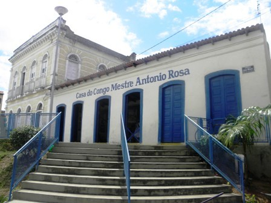
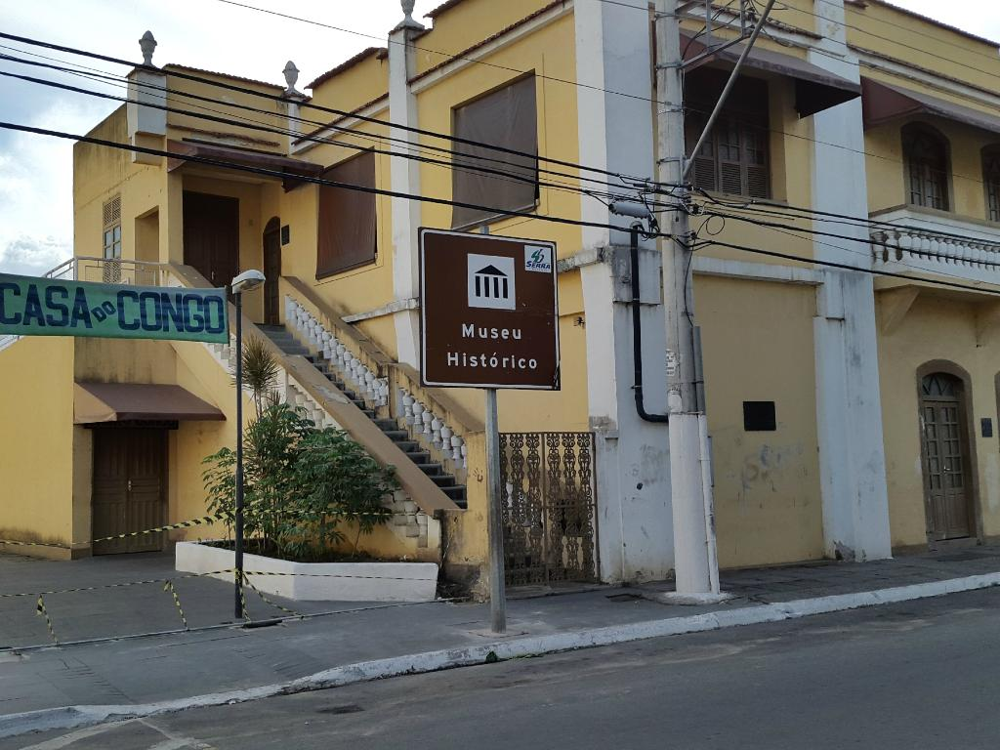
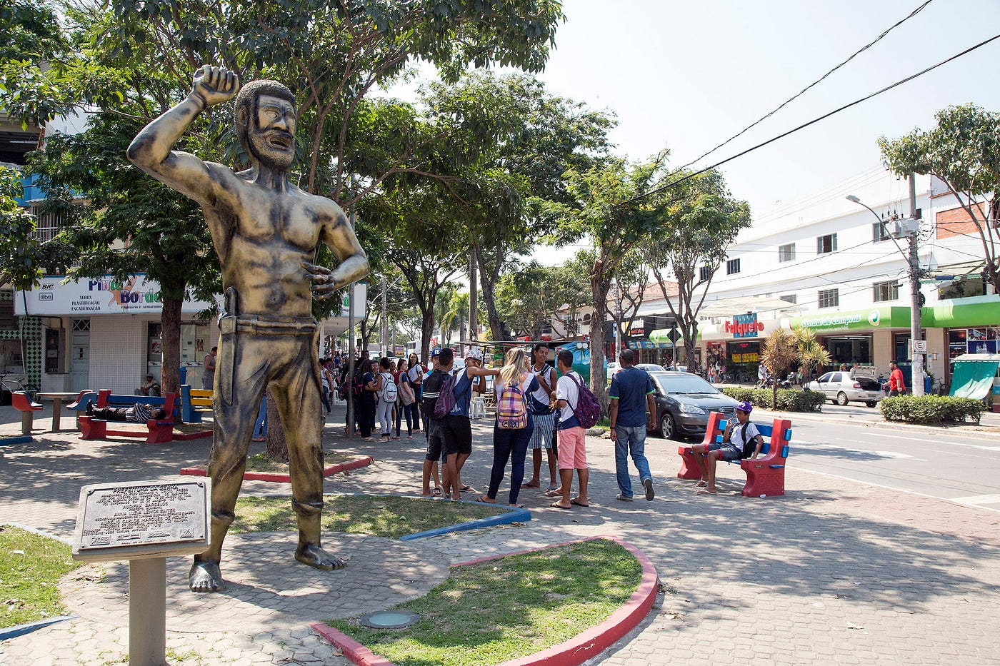
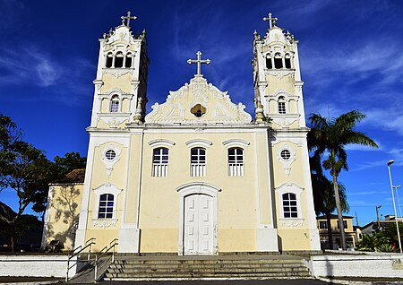
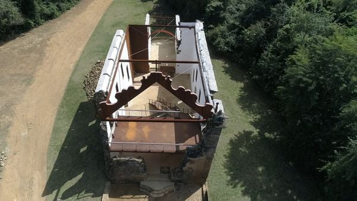

Casa do Congo
A Casa do Congo Mestre Antônio Rosa é uma das maiores conquistas da Sociedade Serrana. Um espaço que existe em função da memória e da cultura, não só da Serra, mas do Espírito Santo e até mesmo do Brasil. Um espaço a serviço da Identidade do Povo. Ela foi fundada no ano de 2000 pela Prefeitura Municipal da Serra através da Secretaria de Turismo, Cultura, Esporte e Lazer.
O espaço
Ela possui dois grandes princípios norteadores: um, é a divulgação do Patrimônio Histórico e Arquitetônico da Serra, que está passando por um processo de tombamento e reutilização, sendo ela mesma um exemplo desse processo; e outro, é a criação permanente de um espaço Formador de Consciência Histórico-Cultural, onde além de estar divulgando e contribuindo na preservação do congo e de todos os seus elementos, trabalha com várias outras manifestações e iniciativas em relação à cultura. Para a Casa do Congo, investimento em cultura é investimento na qualidade de vida de todos.
A Casa do Congo Mestre Antônio Rosa é uma vitrine para todos aqueles que queiram conhecer o Congo, principal manifestação da Cultura Popular Capixaba, além de outras manifestações artísticas. Um espaço aberto que está sempre divulgando para estudantes, professores e para o público em geral muitos temas que servem para o aprendizado em sala de aula e para a vida, que nos 4 anos, tempo de existência , já recebeu a visita de quase 20 mil pessoas (outubro-2004).
A homenagem
Esta Casa do Congo, por meio de seu nome, homenageou um homem, Serrano e Congueiro, que teve uma vida dedicada ao congo, trabalhando muito para seu fortalecimento. Este homem é Antônio de Pádua Machado, ou como era conhecido, Mestre Antônio Rosa que nasceu em 26 de Janeiro de 1923, curiosamente um mês depois da Festa de São Benedito na Serra.
Mestre Antônio Rosa seguiu uma tradição de família e se tornou "festeiro" da cidade; foi mestre da Banda de Congo Folclórico de São Benedito, uma das mais antigas do Estado; foi fundador e presidente da Associação de Bandas de Congo da Serra (ABC) e foi responsável pela criação de uma oficina de instrumentos que visava a criação de novas bandas e da organização das existentes. Por tudo isso a homenagem é justa e representativa de todos os Conguistas da Serra e do Espírito Santo.
A casa
O Prédio que sedia a Casa do Congo também tem muita história e é uma das principais construções do Acervo Arquitetônico do Patrimônio Histórico da Serra. Segundo informações ela possui aproximadamente 140 anos e pertenceu a João Miguel, um importante político e comerciante da Serra. A história da preservação desta casa é muito interessante e remonta a um tempo que ainda não existia nenhuma consciência de preservação do casario da Serra, quando "Dona Mocinha" (esposa de João Miguel) pediu que o marido comprasse a casa para não deixar seu então proprietário demoli-la, pois a casa representava muito para ela, sendo o local onde passou a infância.
Museu Histórico
Inserido no coração da Serra-Sede, o Museu Histórico da Serra é um tesouro que nos transporta de volta ao século XIX, através do imponente casarão da família Castello. Inaugurado em 2007, este museu desempenha um papel crucial na preservação da história e da cultura da região, oferecendo aos visitantes uma viagem fascinante ao passado.
O casarão, um dos poucos remanescentes arquitetônicos do século XIX, é em si uma peça de museu, proporcionando um ambiente autêntico para explorar os vestígios da vida na época. Seus corredores de paredes robustas e janelas de época contam histórias silenciosas de gerações passadas que moldaram a comunidade local.
O acervo do Museu Histórico da Serra é uma coleção diversificada, abrangendo desde bens móveis até documentos e obras de arte que capturam a essência da vida na região ao longo dos anos. Ferramentas antigas, utensílios domésticos, fotografias e cartas preservam a memória das pessoas que habitaram o local, oferecendo um vislumbre autêntico de suas vidas.
Ao percorrer as salas do museu, os visitantes podem explorar exposições cuidadosamente organizadas, cada uma contando uma parte diferente da história local. Desde os primórdios da colonização até os eventos marcantes que moldaram a Serra-Sede, o museu oferece uma narrativa envolvente e educativa que destaca a evolução da comunidade ao longo do tempo.
Além de ser uma fonte valiosa para estudiosos e pesquisadores, o Museu Histórico da Serra também desempenha um papel fundamental na educação da comunidade local. Programas educativos, eventos culturais e atividades interativas criam pontes entre as gerações, promovendo um entendimento mais profundo e uma apreciação pelas raízes históricas da região.
Em suma, o Museu Histórico da Serra, abrigado no icônico casarão da família Castello, é mais do que uma instituição cultural; é um guardião do passado, uma testemunha do tempo que continua a enriquecer a comunidade com sua herança viva.
Praça Chico Prego
Você conhece a incrível história de Chico Prego?
Na Serra, Chico Prego é a representação de uma das maiores revoluções que aconteceram no Espírito Santo. Chico, que era escravo, foi líder da revolução em Queimado, morto por enforcamento no município em 11 de janeiro de 1850.
Em 19 de março de 1849, escravos da localidade de São José do Queimado, hoje distrito de Queimado, se revoltaram por causa de uma promessa do frei italiano Gregório José Maria de Bene. Se os escravos construíssem a igreja de São José, teriam alforria, mas isso não aconteceu.
Mais de 300 homens, mulheres e até crianças participaram dessa rebelião capitaneada por Chico Prego, João da Viúva, Elisiário e muitos outros líderes que articularam seu povo para tomar a liberdade com as próprias mãos. A insurreição foi um movimento tão forte que para contê-la foram necessárias forças vindas do estado do Rio de Janeiro, além das capixabas.
Os rebelados foram presos e julgados, cinco deles condenados à morte. Um dos líderes da Revolta, Elisiário, escapou da cadeia e refugiou-se nas matas do Morro do Mestre Álvaro e nunca mais foi recapturado. Chico Prego foi capturado e enforcado, em 11 de janeiro de 1850. Hoje, ele nomeia a Lei de Incentivo Cultural do Município.
O sítio histórico do Queimado, que foi palco do principal movimento contra a escravidão no Espírito Santo: a Insurreição do Queimado, fica localizado a cerca de 25 quilômetros da capital do Estado, Vitória.
Igreja Nossa Senhora da Conceição
Localizada na atual cidade de Serra, no interior do estado do Espírito Santo, a fundação remonta o período do Brasil colonial.A aldeia da Conceição teria sido fundada com o apoio dos religiosos a partir da aliança feita pelo primeiro donatário do Espírito Santo, Vasco Fernandes Coutinho, com índios temiminó liderados por Maracaiaguaçu, que migraram fugindo dos ataques de índios tamoios na região do atual norte do Rio de Janeiro.
A fundação da Igreja remonta o ano de 1556, quando foi construída uma capela para Nossa Senhora da Conceição naquela aldeia, por iniciativa do Padre jesuíta Braz Lourenço,mais ou menos ao mesmo tempo em que construíram uma Igreja de São João na aldeia em que vivia o índio Arariboia, atual distrito de Carapina.
A Igreja de Nossa Senhora da Conceição foi construída aos pés do Mestre Álvaro, maciço rochoso em Serra, às margens do Rio Santa Maria da Vitória. A instalação da capela não continha torres, apenas, paredes de alvenaria de pedra argamassada. A igreja foi batizada em homenagem à Imaculada Conceição, segundo o dogma católico, a concepção da Virgem Maria sem mancha (em latim, macula) do pecado original.
Mudança
Mais de duzentos anos depois da iniciativa do Padre Braz Lourenço, a Capela, todo o povoado e uma aldeia indígena existente na região tiveram que ser transferidos para um outro local, após um surto de malária que acometeu a região. Com a mudança de endereço provocada pelo surto da doença, a igreja transferiu-se para a Praça Barbosa Leão, região central de Serra. Sua nova estrutura ficou pronta no ano de 1769. Nos seus jardins é fincado um mastro, símbolo máximo da festa do Ciclo Folclórico e Religioso de São Benedito, inaugurado há mais de 160 anos, no dia 26 de dezembro.
Devido sua localização mais centralizada a partir de 1769, a capela foi emancipada para Igreja Matriz. No ano de 1938, o então prefeito de Serra, Rômulo Castello incorporou ao templo duas torres, abrigando os sinos, que antes encontravam-se nas laterais. O interior da igreja possui diversas pinturas do artista Walter Francisco de Assis, notório pintor serrano.
Festividades
A festividade em homenagem à Imaculada Conceição, realizada em 8 de dezembro, coincide com o aniversário da cidade de Serra. Na tradicional festa realizada pela comunidade eclesiástica são organizadas carreatas e missas em homenagem a Nossa Senhora da Conceição.
Em 2020, devido à Pandemia de COVID-19 no Brasil, não houve os tradicionais eventos abertos com shows na cidade para celebrar a data. No ano seguinte, devido ao aparecimento da nova variante Ômicron do SARS-CoV-2 o Ministério Público do Estado do Espírito Santo (MPES) recomendou a não realização de eventos abertos no estado, o que a comunidade religiosa de Serra acatou.
Esse ano já tá confirmado! Bagulho vai ser louco. Irraahh
Conheça as ruínas da Igreja de São José do Queimado
As ruínas da Igreja de Queimado, localizado no Sítio Histórico São José do Queimado, em Serra Sede, é um importante monumento histórico capixaba. Com mais de 170 anos de história, a construção, palco da Insurreição de Queimado, uma das principais revoltas do país, guarda a memória de luta do povo negro contra a escravidão no Espírito Santo.
A edificação, que estava abandonada, passou por um minucioso processo de restauração que resgatou sua estrutura arquitetônica original, com recuperação de pisos, escada, fachada, entre outros, transformando as ruínas em um museu a céu aberto e, por consequência, um ponto de visitação turística, inclusive com ambientes adaptados conforme normas de acessibilidade. O local ainda conta com um mirante no segundo andar onde é possível observar a vista de todo o sítio arqueológico.
Visite as ruínas da Igreja de São José do Queimado e valorize o patrimônio histórico local.
TRADIÇÃO E CULTURA
Patrimônio histórico e cultural
O patrimônio histórico e cultural da Serra se remete ao período do Brasil Colônia. De grande expressividade cultural o município da Serra além do folclore típico e da Igreja e Residência Reis Magos, encontra-se ainda a Capela de São João Batista, que integra o projeto do Parque Arqueológico de Carapina. Ela foi construída em 1584 e tombada pelo Conselho Estadual de Cultura em 1984.
Outro sítio histórico e cultural do município é o de Queimado, que foi palco de uma das maiores revolta de escavos do Brasil, aqui liderada pelos heróis Chico Prego, João da Viúva e Elisiário, em 19 de março de 1849. Composto pelas Ruínas da Igreja de São José e pelos resquícios arqueológicos do povoado, foi tombado pelo Conselho Estadual de Cultura em 1993.
Aberto à visitação o Sítio Arqueológico de Queimado recebeu recentemente intervenções voltadas à sua conservação e e preservação da memória, como: totens explicativos, painéis ilustrativos e uma restruturação em aço.
Na sede do município da Serra, construída em 1769, está a Igreja Matriz de Nossa Senhora da Conceição. Nos seus jardins acontece a tradicional fincado o Mastro, símbolo máximo da festa do Ciclo Folclórico e Religioso de São Benedito, realizada há mais de 160 anos, no dia 26 de dezembro. Bem próximo, está a Estátua do líder negro Chico Prego, o Museu Histórico da Serra preserva valioso acervo mobiliário e artístico que representam uma fase da história local.
Impossivel falar do município da Serra sem mencionar o "Congo". Ocupando lugar das maiores expressões folclóricas e cultuarais do estado do Espírto Santo o Congo da Serra, no ano de 2003, por intermédio da Associação de Bandas de Congo da Serra (ABC), recebeu do presidente Luiz Inácio Lula da Silva a Comenda da Ordem do Mérito Cultural, honraria máxima da cultura nacional.